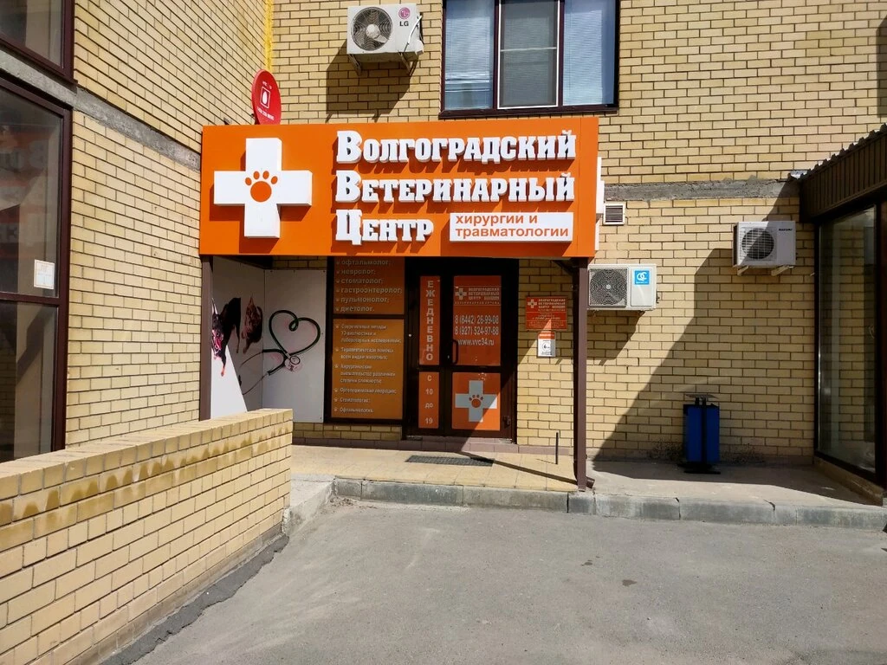

Контакты
Как нас найти
ВолгоградДонецкая, 16А
Напротив стадиона «Динамо»
Открыть в Яндекс КартахЕжедневно10:00–19:00
Запись на приём
Позвоните по любому из двух номеров. Администратор поможет выбрать врача и время приёма.
Электронная почта
volgovet@mail.ru
Интерактивную карту предоставляет Яндекс.
